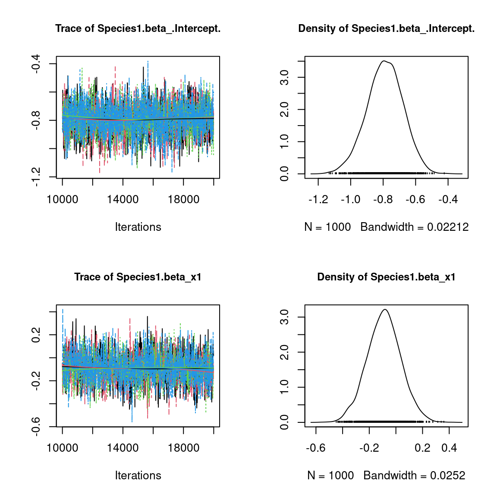
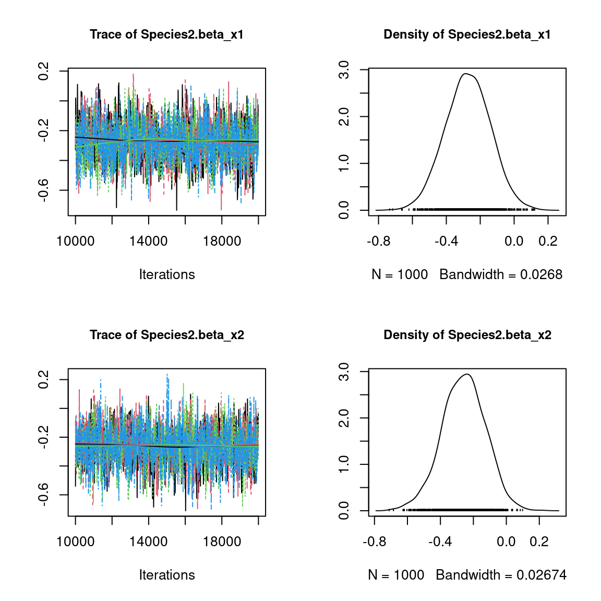
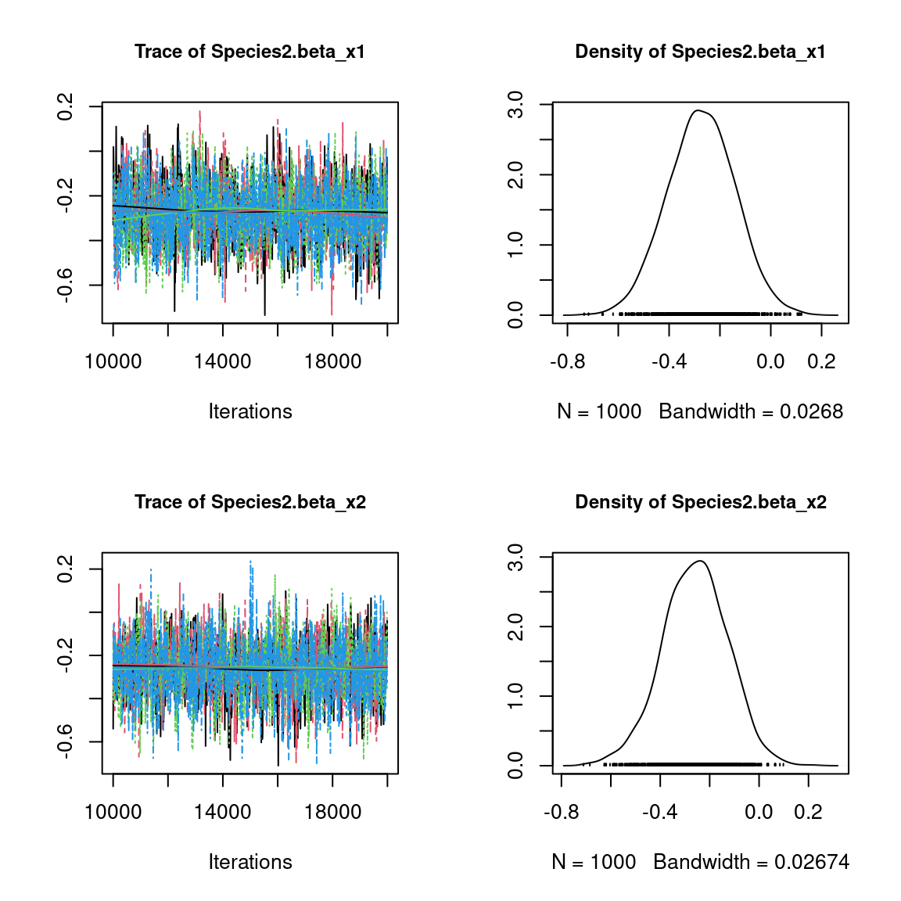
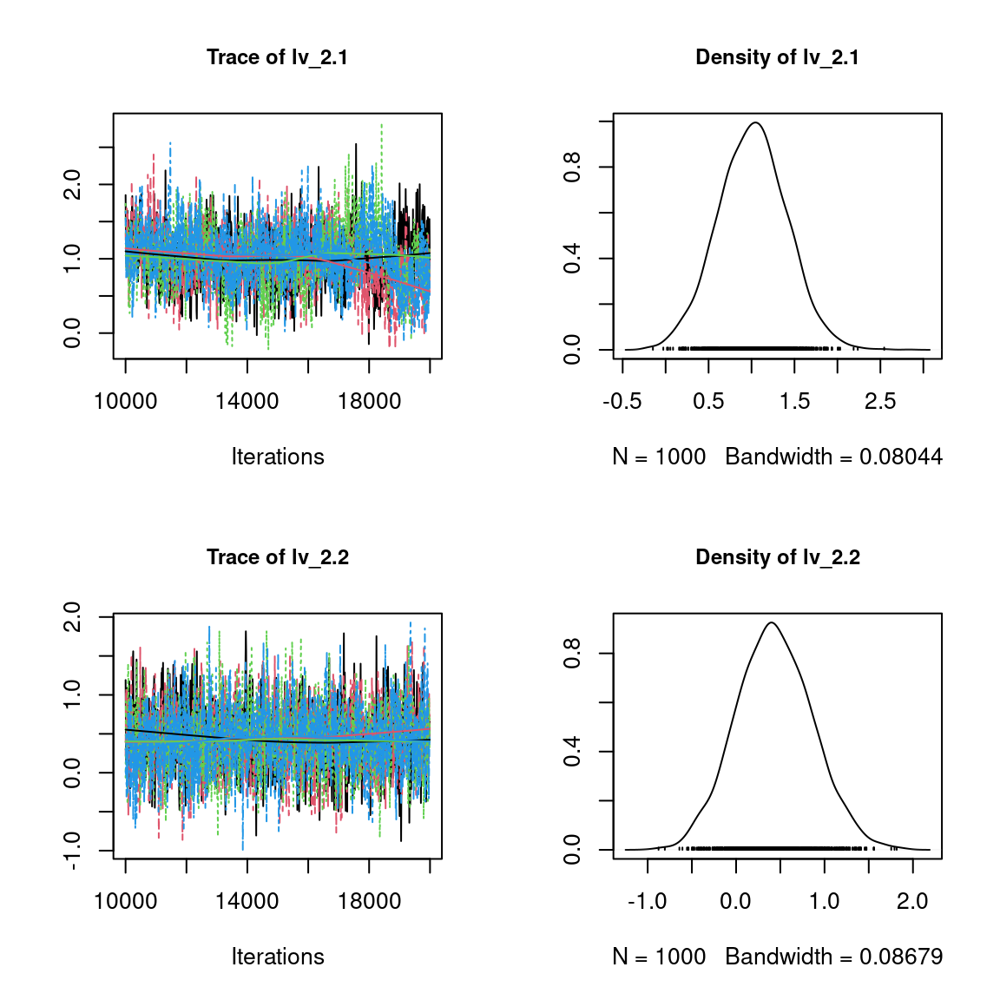
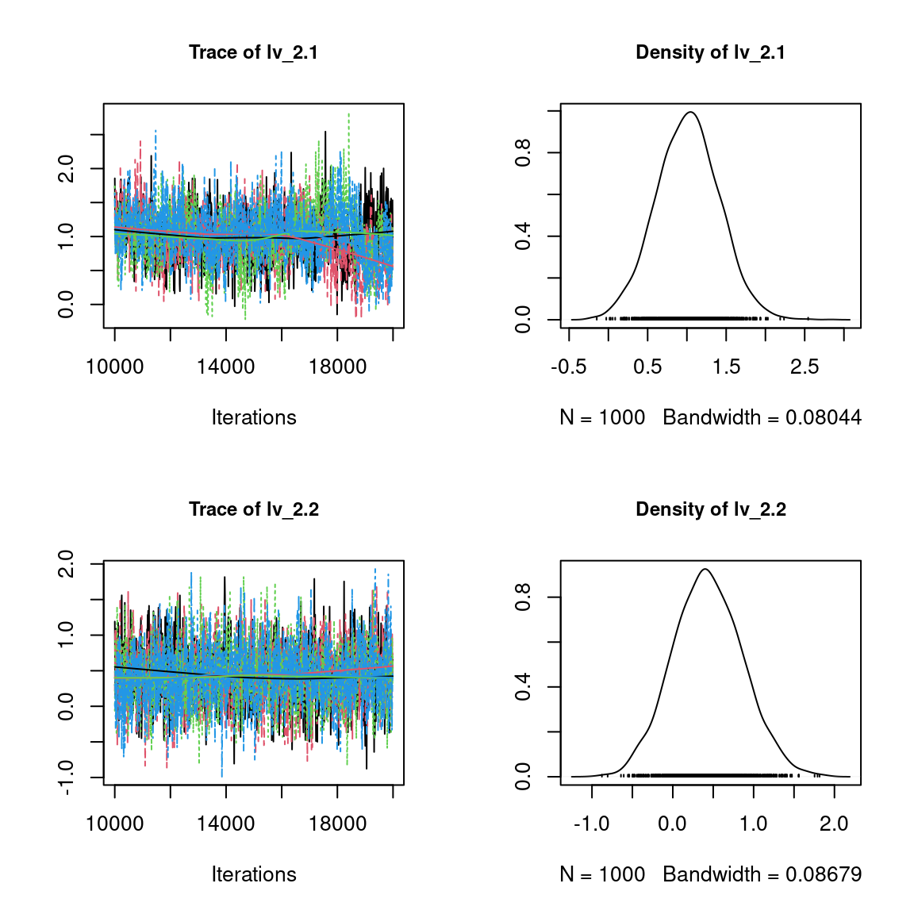

1 Generating data for a Hierarchical Gaussian Linear Regression
1.1 Binomial model for presence-absence data
We consider a latent variable model (LVM) to account for species co-occurrence on all sites (Warton et al. 2015).
\[y_{ij} \sim \mathcal{B}ernoulli(\theta_{ij})\]
\[ \mathrm{g}(\theta_{ij}) =\alpha_i + X_i\beta_j + W_i\lambda_j \]
- \(\mathrm{g}(\cdot)\): Link function probit.
- \(\alpha_i\): Site random effect with \(\alpha_i \sim \mathcal{N}(0, V_{\alpha})\). Corresponds to a mean suitability for site \(i\).
- \(X_i\): Vector of explanatory variables for site \(i\) (including intercept).
- \(\beta_j\): Effects of the explanatory variables on the probability of presence of species \(j\).
- \(W_i\): Vector of random latent variables for site \(i\). \(W_i \sim N(0, 1)\). The number of latent variables must be fixed by the user (default to 2).
- \(\lambda_j\): Effects of the latent variables on the probability of presence of species \(j\). Also known as “factor loadings” (Warton et al. 2015).
This model is equivalent to a multivariate GLMM \(\mathrm{g}(\theta_{ij}) =\alpha_i + X_i.\beta_j + u_{ij}\), where \(u_{ij} \sim \mathcal{N}(0, \Sigma)\) with the constraint that the variance-covariance matrix \(\Sigma = \Lambda \Lambda^{\prime}\), where \(\Lambda\) is the full matrix of factor loadings, with the \(\lambda_j\) as its columns.
1.2 Data-set simulation
We generate presence-absence data following this generalized multivariate linear model with a probit link function, which includes latent variables and random site effect.
#==================
#== Data simulation
#= Number of sites
nsite <- 300
#= Set seed for repeatability
seed <- 123
set.seed(seed)
#= Number of species
nsp<- 100
#= Number of latent variables
n_latent <- 2
#= Ecological process (suitability)
x1 <- rnorm(nsite,0,1)
x2 <- rnorm(nsite,0,1)
X <- cbind(rep(1,nsite),x1,x2)
np <- ncol(X)
#= Latent variables W
W <- cbind(rnorm(nsite,0,1),rnorm(nsite,0,1))
data <- cbind (X,W)
#= Fixed species effect beta
beta.target <- t(matrix(runif(nsp*ncol(X),-1,1),
byrow=TRUE, nrow=nsp))
#= Factor loading lambda
l.zero <- 0
l.diag <- runif(2,0,1)
l.other <- runif(nsp*n_latent-3,-1,1)
lambda.target <- t(matrix(c(l.diag[1],l.zero,
l.other[1],l.diag[2],l.other[-1]), byrow=TRUE, nrow=nsp))
param.target <- rbind(beta.target,lambda.target)
#= Variance of random site effect
V_alpha.target <- 0.5
#= Random site effect
alpha.target <- rnorm(nsite,0,sqrt(V_alpha.target))
#= probit(theta)
probit_theta<-X%*%beta.target + W%*%lambda.target + alpha.target
# Latent variable Z
e <- matrix(rnorm(nsp*nsite,0,1),nsite,nsp)
Z_true <- probit_theta + e
# Presence-absence matrix Y
Y <- matrix (NA, nsite,nsp)
for (i in 1:nsite){
for (j in 1:nsp){
if ( Z_true[i,j] > 0) {Y[i,j] <- 1}
else {Y[i,j] <- 0}
}
}
colnames(Y) <- paste0("Species", 1:nsp)
save(Y, Z_true, alpha.target, V_alpha.target, beta.target, probit_theta,
X, lambda.target, np , nsite, nsp, n_latent, W, file="jSDM_in_parallel_files/sim_data.rda")We look at the number of observations per site.
load("jSDM_in_parallel_files/sim_data.rda")
head(Y)
#> Species1 Species2 Species3 Species4 Species5 Species6 Species7 Species8
#> [1,] 0 0 0 0 0 0 0 1
#> [2,] 1 0 1 1 0 0 1 1
#> [3,] 1 1 0 0 0 0 0 0
#> [4,] 1 1 0 0 0 1 0 1
#> [5,] 0 1 0 1 1 1 0 0
#> [6,] 1 1 1 1 0 0 1 0
#> Species9 Species10 Species11 Species12 Species13 Species14 Species15
#> [1,] 1 0 1 0 0 0 0
#> [2,] 1 0 1 1 0 1 0
#> [3,] 1 1 1 0 1 1 0
#> [4,] 0 1 1 1 0 1 0
#> [5,] 0 1 1 1 1 1 0
#> [6,] 0 0 0 1 0 0 0
#> Species16 Species17 Species18 Species19 Species20 Species21 Species22
#> [1,] 1 0 0 0 0 0 0
#> [2,] 1 0 0 1 0 0 1
#> [3,] 1 0 0 1 0 0 0
#> [4,] 1 0 0 1 1 0 0
#> [5,] 0 1 0 1 1 0 0
#> [6,] 0 0 1 1 1 1 1
#> Species23 Species24 Species25 Species26 Species27 Species28 Species29
#> [1,] 0 1 0 0 1 1 1
#> [2,] 0 1 1 1 1 0 1
#> [3,] 0 0 0 1 0 0 0
#> [4,] 1 0 0 1 1 1 0
#> [5,] 0 1 0 1 1 0 0
#> [6,] 0 0 1 0 1 1 1
#> Species30 Species31 Species32 Species33 Species34 Species35 Species36
#> [1,] 1 0 0 1 0 0 0
#> [2,] 1 1 1 1 0 0 0
#> [3,] 0 1 1 0 0 0 0
#> [4,] 0 1 1 1 1 1 0
#> [5,] 1 0 0 1 0 1 0
#> [6,] 1 0 1 1 1 1 1
#> Species37 Species38 Species39 Species40 Species41 Species42 Species43
#> [1,] 0 0 0 0 0 1 0
#> [2,] 1 1 0 1 1 0 0
#> [3,] 1 0 1 1 0 0 0
#> [4,] 1 0 1 1 1 0 0
#> [5,] 0 0 0 0 0 0 1
#> [6,] 1 0 1 1 1 1 0
#> Species44 Species45 Species46 Species47 Species48 Species49 Species50
#> [1,] 0 0 0 0 0 0 1
#> [2,] 1 0 0 1 0 1 1
#> [3,] 1 0 0 0 0 1 1
#> [4,] 1 1 0 1 0 1 0
#> [5,] 1 1 0 1 0 1 1
#> [6,] 1 1 0 1 1 1 1
#> Species51 Species52 Species53 Species54 Species55 Species56 Species57
#> [1,] 1 0 0 0 1 1 0
#> [2,] 0 0 0 0 0 0 1
#> [3,] 0 1 1 0 0 1 1
#> [4,] 0 0 1 0 1 1 1
#> [5,] 1 0 1 0 1 1 0
#> [6,] 1 1 1 0 1 0 1
#> Species58 Species59 Species60 Species61 Species62 Species63 Species64
#> [1,] 0 1 0 0 0 1 0
#> [2,] 0 1 0 0 0 0 0
#> [3,] 0 0 0 0 0 0 0
#> [4,] 0 0 0 0 0 0 1
#> [5,] 1 0 0 0 0 1 0
#> [6,] 1 0 1 0 0 1 0
#> Species65 Species66 Species67 Species68 Species69 Species70 Species71
#> [1,] 0 0 0 1 0 0 1
#> [2,] 1 1 1 0 1 0 0
#> [3,] 1 0 1 0 0 0 0
#> [4,] 1 1 1 0 0 1 1
#> [5,] 1 1 1 1 0 1 1
#> [6,] 0 1 1 0 0 0 0
#> Species72 Species73 Species74 Species75 Species76 Species77 Species78
#> [1,] 0 0 1 0 0 1 0
#> [2,] 0 0 1 1 0 0 0
#> [3,] 0 0 1 0 1 0 0
#> [4,] 0 0 1 1 1 1 1
#> [5,] 0 0 1 0 0 1 0
#> [6,] 1 1 1 1 0 0 0
#> Species79 Species80 Species81 Species82 Species83 Species84 Species85
#> [1,] 0 0 0 1 0 0 1
#> [2,] 0 1 0 1 1 1 1
#> [3,] 0 1 1 1 1 0 0
#> [4,] 0 0 1 0 1 0 0
#> [5,] 0 0 1 0 1 1 1
#> [6,] 0 1 1 1 0 1 0
#> Species86 Species87 Species88 Species89 Species90 Species91 Species92
#> [1,] 1 0 0 0 0 1 1
#> [2,] 0 1 0 0 1 0 0
#> [3,] 1 1 1 1 1 0 0
#> [4,] 1 0 1 0 1 0 1
#> [5,] 1 0 0 0 0 0 1
#> [6,] 1 1 1 1 0 0 0
#> Species93 Species94 Species95 Species96 Species97 Species98 Species99
#> [1,] 0 1 0 1 1 0 1
#> [2,] 1 0 1 0 1 1 1
#> [3,] 1 0 1 0 1 0 0
#> [4,] 0 0 1 0 0 0 1
#> [5,] 0 1 1 1 1 0 0
#> [6,] 1 1 1 0 1 1 1
#> Species100
#> [1,] 1
#> [2,] 0
#> [3,] 1
#> [4,] 0
#> [5,] 1
#> [6,] 1
# Number of observations per site
nobs_site <- apply(Y, 1, sum)
nobs_site
#> [1] 31 49 39 51 49 61 56 37 54 59 65 50 38 32 79 53 32 27 43 56 44 75 23 84 61
#> [26] 51 59 31 65 66 27 30 45 40 29 44 41 16 55 33 21 31 39 69 37 57 35 47 28 29
#> [51] 53 70 50 50 50 67 65 9 28 48 31 63 50 66 71 86 37 32 42 29 71 25 27 59 64
#> [76] 60 35 26 63 65 82 28 19 62 77 43 68 40 77 52 56 36 40 36 43 39 54 32 56 33
#> [101] 32 72 57 49 30 38 28 57 89 73 62 46 74 77 44 76 64 35 33 43 55 37 44 39 70
#> [126] 51 60 34 34 24 59 41 44 61 59 32 21 66 28 31 65 77 46 59 45 58 53 76 58 53
#> [151] 31 47 43 42 54 54 22 65 46 46 16 25 56 56 60 50 45 48 55 55 50 53 75 61 55
#> [176] 61 15 43 27 67 53 34 61 71 40 38 37 35 61 40 56 34 59 45 27 38 28 28 31 19
#> [201] 70 36 51 54 55 49 60 64 35 24 54 50 43 47 76 52 21 52 38 50 52 75 45 64 64
#> [226] 55 25 43 54 48 53 45 69 42 50 63 53 81 73 79 57 44 30 34 34 60 45 50 72 61
#> [251] 48 35 41 28 56 36 53 69 57 47 37 55 48 29 48 59 49 62 34 88 26 60 55 31 44
#> [276] 44 38 45 42 56 28 52 31 76 44 33 44 57 57 38 65 59 56 46 62 51 23 64 68 60
# Number of observations per species
nobs_sp <- apply(Y, 2, sum)
nobs_sp
#> Species1 Species2 Species3 Species4 Species5 Species6 Species7
#> 189 197 99 144 109 85 165
#> Species8 Species9 Species10 Species11 Species12 Species13 Species14
#> 193 162 194 188 188 101 192
#> Species15 Species16 Species17 Species18 Species19 Species20 Species21
#> 100 186 118 114 191 100 108
#> Species22 Species23 Species24 Species25 Species26 Species27 Species28
#> 101 92 91 123 132 183 115
#> Species29 Species30 Species31 Species32 Species33 Species34 Species35
#> 199 157 192 214 222 100 187
#> Species36 Species37 Species38 Species39 Species40 Species41 Species42
#> 134 210 112 182 159 183 107
#> Species43 Species44 Species45 Species46 Species47 Species48 Species49
#> 119 212 165 85 194 98 170
#> Species50 Species51 Species52 Species53 Species54 Species55 Species56
#> 213 151 126 141 95 141 176
#> Species57 Species58 Species59 Species60 Species61 Species62 Species63
#> 77 156 104 100 184 84 200
#> Species64 Species65 Species66 Species67 Species68 Species69 Species70
#> 122 157 203 209 161 80 107
#> Species71 Species72 Species73 Species74 Species75 Species76 Species77
#> 177 129 86 198 125 156 112
#> Species78 Species79 Species80 Species81 Species82 Species83 Species84
#> 183 89 156 120 113 234 99
#> Species85 Species86 Species87 Species88 Species89 Species90 Species91
#> 192 165 104 117 128 145 89
#> Species92 Species93 Species94 Species95 Species96 Species97 Species98
#> 108 127 144 205 171 99 126
#> Species99 Species100
#> 160 185
# Remove species with less than 5 presences
rare_sp <- which(apply(Y, 2, sum) < 5)
if(length(rare_sp)!=0){
Y <- Y[, -rare_sp]
probit_theta <- probit_theta[, -rare_sp]
Z_true <- Z_true[, -rare_sp]
nsp <- ncol(Y)
nsp
nsite <- nrow(Y)
nsite
}2 Fitting joint Species Distribution Models in parallel
We simulate in parallel two Monte-Carlo Markov chains (MCMC) of parameters values for this binomial model, using the R packages doParallel and foreach in a first time and snow and snowfall in a second time.
2.1 Using doParallel and foreach
We estimate the model parameters with the function jSDM_binomial_probit_block().
library(parallel)
library(doParallel)
## Make a cluster for parallel MCMCs
nchains <- 2
ncores <- nchains ## One core for each MCMC chains
clust <- makeCluster(ncores)
registerDoParallel(clust)
# Number of latent variables
n_latent <- 2
# Starting parameters
lambda_start <- c(-1,1)
beta_start <- c(-1,1)
W_start <- c(0.1,-0.1)
alpha_start <- c(-0.5, 0.5)
V_alpha_start <- c(1, 0.5)
#formatting of starting parameters
#and constraints on lambda generated by the function
# Seeds
seed_mcmc <- c(1234, 4321)
# Model
mod_probit_1 <-
foreach (i = 1:nchains) %dopar% {
# Infering model parameters
mod <- jSDM_binomial_probit_block(
# Iterations
burnin=10000, mcmc=10000, thin=10,
# Data
presence_site_sp=Y,
site_data = X[,-1],
site_suitability = ~.,
# Model specification
n_latent=n_latent,
site_effect="random",
# Priors
V_beta = 1,
mu_beta = 0,
mu_lambda = 0,
V_lambda= 1,
shape=0.5,
rate=0.0005,
# Starting values
beta_start = beta_start[i],
lambda_start = lambda_start[i],
W_start=W_start[i],
alpha_start = alpha_start[i],
V_alpha = V_alpha_start[i],
# Other
seed = seed_mcmc[i],
verbose = 1
)
return(mod)
}
# Stop cluster
stopCluster(clust)
2.2 Using snow and snowfall
## load libraries
library(snow)
library(snowfall)
## Setting the number of CPUs to be 2
sfInit(parallel=TRUE, cpus=2)
## Assigning the jSDM library to each CPU
sfLibrary(jSDM)
# Number of latent variables
n_latent <- 2
# Starting parameters
# formatting of starting parameters
# and constraints on lambda generated by the function
lambda_start <- c(-0.5, 0.5)
beta_start <- c(-0.5,0.5)
W_start <- c(0.2,-0.2)
alpha_start <- c(-1, 1)
V_alpha_start <- c(2, 1.5)
# Seeds
seed_mcmc <- c(123, 321)
# list of data and starting parameters
listData <- list(Y=Y, X=X[,-1], beta_start, lambda_start, W_start, alpha_start, V_alpha_start, seed_mcmc)
## Defining the function that will run MCMC on each CPU
# Arguments:
# i - will be 1 or 2
mod.MCMChregress <- function (i,listData) {
# data
Y <- listData[[1]]
X <- listData[[2]]
beta_start <- listData[[3]]
lambda_start <- listData[[4]]
W_start <- listData[[5]]
alpha_start <- listData[[6]]
V_alpha_start <- listData[[7]]
seed_mcmc <- listData[[8]]
# Infering model parameters
mod <- jSDM_binomial_probit_block(
# Iterations
burnin=10000, mcmc=10000, thin=10,
# Data
presence_site_sp=Y,
site_data = X,
site_suitability = ~.,
# Model specification
n_latent=2,
site_effect="random",
# Priors
V_beta = 1,
mu_beta = 0,
mu_lambda = 0,
V_lambda= 1,
shape=0.5,
rate=0.0005,
# Starting values
beta_start = beta_start[i],
lambda_start = lambda_start[i],
W_start = W_start[i],
alpha_start = alpha_start[i],
V_alpha = V_alpha_start[i],
# Other
seed = seed_mcmc[i],
verbose = 1
)
return(mod)
}# Starting parameters
## Calling the sfLapply function that will run on each of the CPUs
mod_probit_2 <- sfLapply(1:2, fun=mod.MCMChregress, listData=listData)
## Stop cluster
sfStop()
# Output
n_chains <- length(c(mod_probit_1, mod_probit_2))
mod <- mod_probit_1[[1]]
str_mod <- paste(capture.output(str(mod, max.level = 1)), collapse="\n")
save(n_chains, str_mod, file="jSDM_in_parallel_files/output.rda")
load("jSDM_in_parallel_files/output.rda")
cat("number of chains :", n_chains,"\n")
#> number of chains : 4
cat("content of each chain :", str_mod,"\n")
#> content of each chain : List of 8
#> $ mcmc.Deviance : 'mcmc' num [1:1000, 1] 24686 24755 24811 24790 24750 ...
#> ..- attr(*, "mcpar")= num [1:3] 10001 19991 10
#> ..- attr(*, "dimnames")=List of 2
#> $ mcmc.alpha : 'mcmc' num [1:1000, 1:300] -0.694 -0.861 -0.494 -0.841 -0.35 ...
#> ..- attr(*, "mcpar")= num [1:3] 10001 19991 10
#> ..- attr(*, "dimnames")=List of 2
#> $ mcmc.V_alpha : 'mcmc' num [1:1000, 1] 0.407 0.377 0.482 0.439 0.439 ...
#> ..- attr(*, "mcpar")= num [1:3] 10001 19991 10
#> ..- attr(*, "dimnames")=List of 2
#> $ mcmc.sp :List of 100
#> $ mcmc.latent :List of 2
#> $ Z_latent : num [1:300, 1:100] -0.683 1.232 1.202 1.029 -0.603 ...
#> $ probit_theta_pred: num [1:300, 1:100] 0.463 0.885 0.833 0.442 0.72 ...
#> $ model_spec :List of 24
#> - attr(*, "class")= chr "jSDM"3 Evaluation of MCMC convergence
We evaluate the convergence of the MCMC output in which four parallel chains are run with starting values that are overdispersed relative to the posterior distribution. Convergence is diagnosed when the four chains have ‘forgotten’ their initial values, and the output from all chains is indistinguishable. If the convergence diagnostic gives values of potential scale reduction factor or psrf substantially above 1, its indicates lack of convergence.
require(coda)
arr2mcmc <- function(x) {
return(mcmc(as.data.frame(x)))
}
mod_probit <- c(mod_probit_1,mod_probit_2)
# MCMC lists
mcmc_list_alpha <- mcmc.list(lapply(lapply(mod_probit,"[[","mcmc.alpha"), arr2mcmc))
mcmc_list_V_alpha <- mcmc.list(lapply(lapply(mod_probit,"[[","mcmc.V_alpha"), arr2mcmc))
mcmc_list_lv <- mcmc.list(lapply(lapply(mod_probit,"[[","mcmc.latent"), arr2mcmc))
mcmc_list_centered_lv <- mcmc.list(lapply(lapply(mcmc_list_lv, scale, scale=FALSE),arr2mcmc))
mcmc_list_deviance <- mcmc.list(lapply(lapply(mod_probit,"[[","mcmc.Deviance"), arr2mcmc))
mcmc_list_param <- mcmc.list(lapply(lapply(mod_probit,"[[","mcmc.sp"), arr2mcmc))
mcmc_list_centered_lambda <- mcmc.list(lapply(lapply(mcmc_list_param[,grep("lambda", grep("sp_1.lambda_2", colnames(mcmc_list_param[[1]]), invert=TRUE, value=TRUE),value=TRUE)], scale, scale=FALSE),arr2mcmc))
mcmc_list_deviance <- mcmc.list(lapply(lapply(mod_probit,"[[","mcmc.Deviance"), arr2mcmc))
nsamp <- nrow(mcmc_list_alpha[[1]])
# psrf gelman indice
psrf_alpha <- gelman.diag(mcmc_list_alpha)$mpsrf
psrf_V_alpha <- gelman.diag(mcmc_list_V_alpha)$psrf
psrf_beta <- gelman.diag(mcmc_list_param[,grep("beta",colnames(mcmc_list_param[[1]]))])$mpsrf
psrf_lambda <- gelman.diag(mcmc_list_centered_lambda)$mpsrf
psrf_lv <- gelman.diag(mcmc_list_centered_lv)$mpsrf
save(psrf_lambda, psrf_lv, psrf_alpha, psrf_V_alpha, psrf_beta,
file="jSDM_in_parallel_files/psrf.rda")#> psrf centered latent variables: 1.239745
#> psrf centered lambda: 1.12503
#> psrf alpha: 1.309279
#> psrf V_alpha: 0.9995559
#> psrf beta: 1.1904324 Representation of results
## Plot trace and posterior distributions
# for two first species
plot(mcmc_list_param[,1:((np+n_latent)*2)])
# for two first sites
plot(mcmc_list_lv[,c(1:2,nsite+1:2)])
par(mfrow=c(1,2))
coda::traceplot(mcmc_list_V_alpha)
coda::densplot(mcmc_list_V_alpha)
abline(v=V_alpha.target, col='red')
legend("topright", legend="V_alpha.target",
lwd=1,col='red', cex=0.6, bty="n")
plot(mcmc_list_alpha[,c(1,2)])
# Deviance
plot(mcmc_list_deviance)
 

 

5 Accuracy of predictions
## Predictive posterior mean for each observation
nchains <- length(mod_probit)
# Species effects beta and factor loadings lambda
par(mfrow=c(1,2))
for (i in 1:nchains){
param <- matrix(unlist(lapply(mod_probit[[i]]$mcmc.sp,colMeans)), nrow=nsp, byrow=T)
if(i==1){
plot(t(beta.target), param[,1:np],
main="species effect beta",
xlab ="obs", ylab ="fitted")
abline(a=0,b=1,col='red')
}
else{
points(t(beta.target), param[,1:np], col=2:nchains)
}
}
for (i in 1:nchains){
param <- matrix(unlist(lapply(mod_probit[[i]]$mcmc.sp,colMeans)), nrow=nsp, byrow=T)
if (i==1){
plot(t(lambda.target), param[,(np+1):(np+n_latent)],
main="factor loadings lambda",
xlab ="obs", ylab ="fitted")
abline(a=0,b=1,col='red')
} else {
points(t(lambda.target), param[,(np+1):(np+n_latent)],
col=2:nchains)
}
}
## W latent variables
par(mfrow=c(1,2))
mean_W <- matrix(0,nsite,n_latent)
for (l in 1:n_latent) {
for (i in 1:nchains){
mean_W[,l] <- summary(mod_probit[[i]]$mcmc.latent[[paste0("lv_",l)]])[[1]][,"Mean"]
if (i==1){
plot(W[,l], mean_W[,l],
main = paste0("Latent variable W_", l),
xlab ="obs", ylab ="fitted")
abline(a=0,b=1,col='red')
}
else{
points(W[,l], mean_W[,l],col=2:nchains)
}
}
}
#= W.lambda
par(mfrow=c(1,2))
for (i in 1:nchains){
if (i==1){
plot(W%*%lambda.target,mean_W%*%t(param[,(np+1):(np+n_latent)]),
main = "W.lambda",
xlab ="obs", ylab ="fitted")
abline(a=0,b=1,col='red')
}
else{
points(W%*%lambda.target,mean_W%*%t(param[,(np+1):(np+n_latent)])
,col=2:nchains)
}
}
#= Random site effect alpha
plot(alpha.target, colMeans(mod_probit[[1]]$mcmc.alpha),
xlab ="obs", ylab ="fitted", main="site effect alpha")
for (i in 2:nchains){
points(alpha.target, colMeans(mod_probit[[i]]$mcmc.alpha), col=2:nchains)
}
abline(a=0,b=1,col='red')
#= Predictions
par(mfrow=c(1,2))
plot(probit_theta, mod_probit[[1]]$probit_theta_pred,
main="probit(theta)",xlab="obs",ylab="fitted")
for (i in 2:nchains){
## probit(tetha)
points(probit_theta, mod_probit[[i]]$probit_theta_pred,col=c(2:nchains))
}
abline(a=0,b=1,col='red')
## Z
plot(Z_true, mod_probit[[1]]$Z_latent,
main="Z_latent", xlab="obs", ylab="fitted")
for (i in 2:nchains){
points(Z_true, mod_probit[[i]]$Z_latent, col=2:nchains)
}
abline(a=0,b=1,col='red')